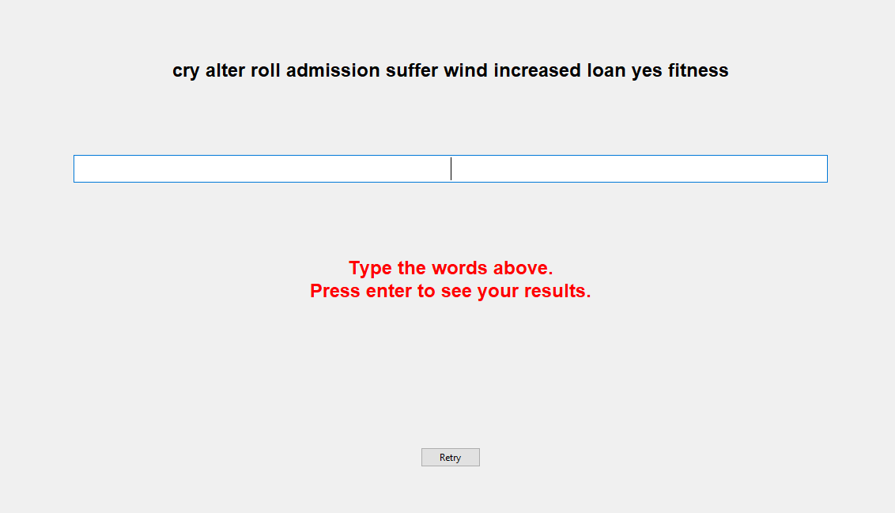

Typing Speed Check
The typing speed check features a full interface in tkinter, and tests your words per minute.

The typing speed check is built in Python with the libray tkinter for the GUI. It draws from a library of 3,000 words to challenge the user.
Upon start, the user is presented with a set of 10 words (adjustable) and they are tasked with typing them as quickly and accurately as possible.
The GUI notes the start as the beginning of the test, and listens for the user to hit the 'Enter' key, which designates that they are done. At this time, it stops the timer.
In order to ensure smooth operation and scalable code, this project is written using OOP methods. The GUI, speed checker, and main program are all operated independently, but work together.
The Typing Speed Check was built as a project for this portfolio. You can view the code in its entirety here:
Typing Speed Check on Github